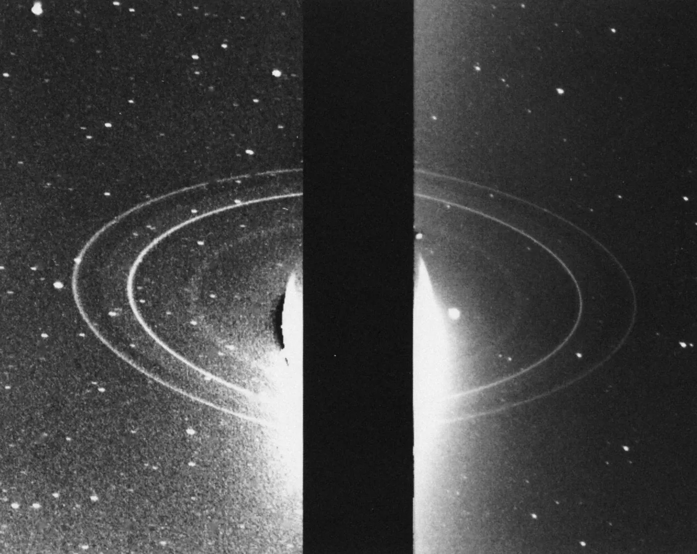
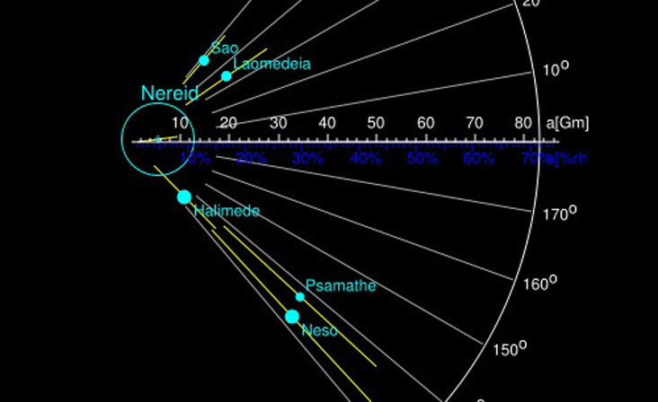

takes Neptune 165 years to complete one orbit around the Sun.
The discovery in 1846 was based on the mathematical
calculations of John Couch Adams.
 December, 1612, the young Italian scientist,
Johann Gottfried Galle (1564-1642) observed Neptun.
Galileo thought it vas a fixed star.
December, 1612, the young Italian scientist,
Johann Gottfried Galle (1564-1642) observed Neptun.
Galileo thought it vas a fixed star.
Examination of Galileo´s journal shows
he developed an iventive measuring instrument
which made it possible to measure micrometer.
Galileo´s Sighting of Neptune
 September, 1846, Le Verrier calculated the approximate location of Neptun,
studying gravity-induced disturbances in the motions of Uranus.
September, 1846, Le Verrier calculated the approximate location of Neptun,
studying gravity-induced disturbances in the motions of Uranus.
The night Le Verrier informed Galle of his findings,
Galle an H. Louis d´ Arrest identified Neptune.
A short method for the discovery of Neptune
Pioneer 10 was the first spacecraft to fly by Neptune.
It was launched on March 2, 1972, and reached Neptune on August 25, 1983.
The first images of Neptune were taken by Pioneer 10 in crosse orbit
2.81 billion miles from the Sun.
Gathering important findings about the
outer solar system.
NASA's first mission to the outer planets set a record,
going beyond the orbit of Neptune. Using all-nuclear electrical power.
Pioneer 10 spacecraft departs solar system,
Headquarters, Washington, D.C.,June 7, 1983

July, 1984, two telescope from la Silla Observatory in Chile,
detected a irregular ring system around Neptune.
Observations revealed the pressence of occulting material.
Rings with variable width and/ or thickness between zero and a few tens of kilometers
The first images of Neptune's rings were taken by Voyager 2 in 1989.
New evidence for a ring around Neptune,
February 1986, J. Manfroid and R. Haefner
Agust, 1989, Voyager 2 made a close flyby of Neptune.
It was launched on August 20, 1977, and
reached Neptune on August 25, 1989.
Images and scientific data from Voyager 2, revealed that the
existing model for the gas giant were too simple.
Neptune's atmosphere has a large anticyclonic storm system,
named the Great Dark Spot (GDS).
From the fly past Triton, scientific data reveals a surface
temperatures -235 degrees Celsius. Unlike the other moons of Neptune,
Triton is a large, and orbit in the opposite direction.
Voyager 2 at Neptune: Imaging Science Results,
15 Dec 1989, Vol 246, Issue 4936

In 2002 four of Neptune's 14 known moons
was discovered. The small and distant moons Laomedia, Neso, Sao and Halimede
was discovered with telescope in Chile and Hawaii.
Most likely formed after collisions with stray rocks.
Neptune was
Neptune Odyssey mission is a orbiter concept and atmospheric probe to the Neptune- Triton system. The mission to the ice-giant will launch approximately by 2031 for a 12 years cruise to Neptune. Orbit 4 years and study the planet, its rings, small satellites, space environment, and the moon Triton.